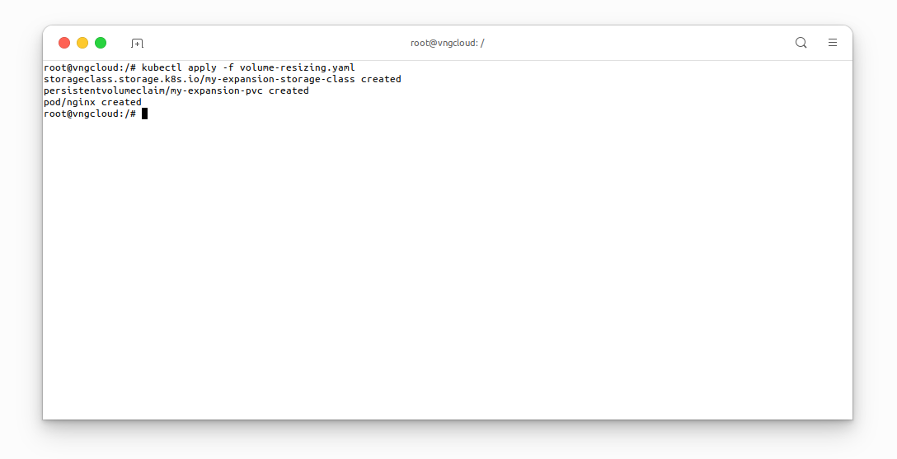
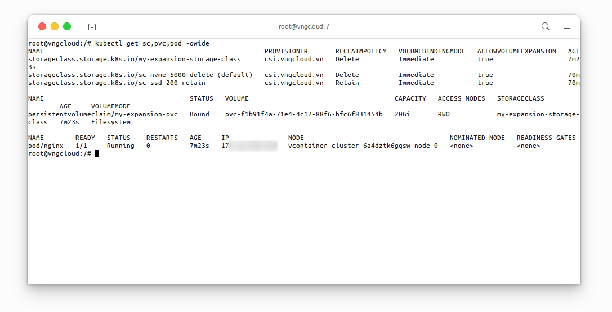
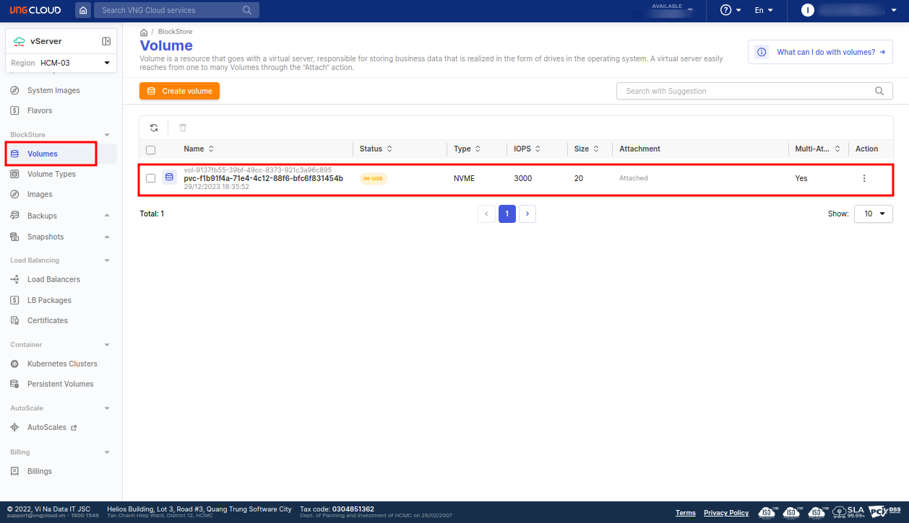
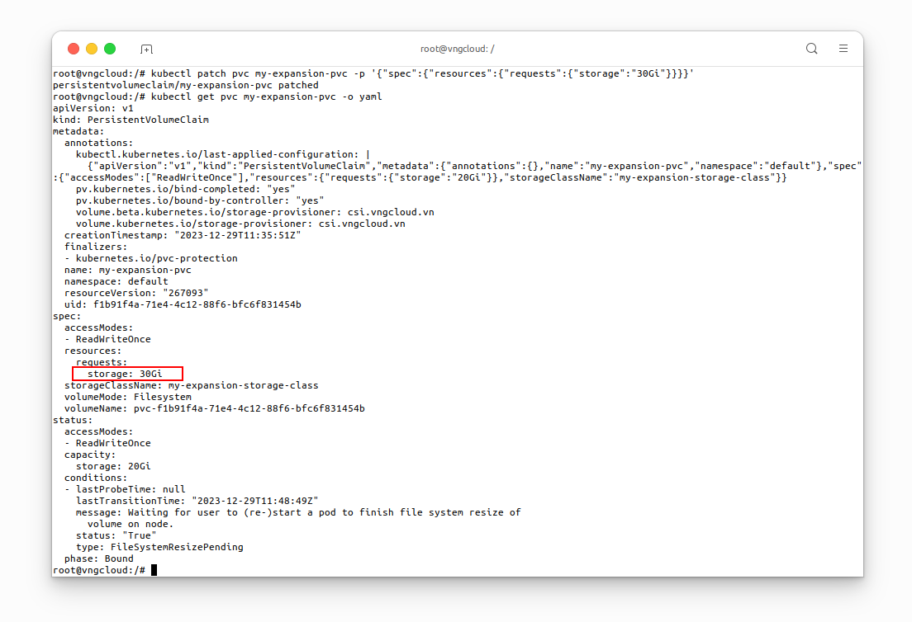
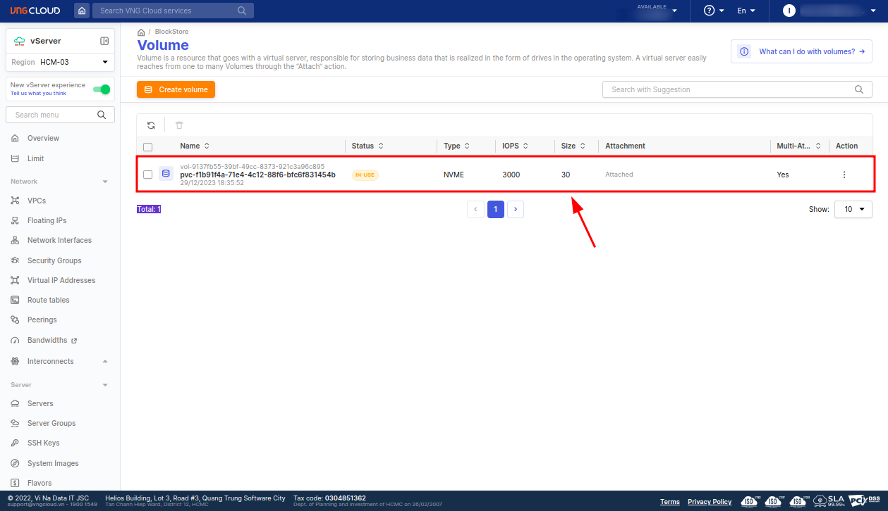
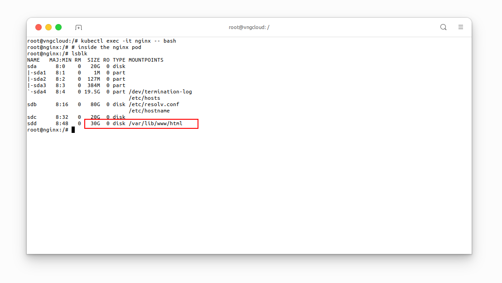

Volume resizing
Prepare the resources
Utilize the volume-resizing.yaml file to provision the required resources prior to resizing the PersistentVolumeClaim.
⚠️ IMPORTANT: To enable Volume Expansion, it is IMPERATIVE to set the
allowVolumeExpansionoption totruein theStorageClassmanifest file.
File volume-resizing.yaml
apiVersion: storage.k8s.io/v1
kind: StorageClass
metadata:
name: my-expansion-storage-class # [1] The StorageClass name, CAN be changed
provisioner: csi.vngcloud.vn # The VNG-CLOUD CSI driver name
parameters:
type: vtype-93a22a9f-1ec0-4e61-84fb-75ac181c13dc # The volume type UUID
allowVolumeExpansion: true # MUST set this value to turn on volume expansion feature
---
apiVersion: v1
kind: PersistentVolumeClaim
metadata:
name: my-expansion-pvc # [2] The PVC name, CAN be changed
spec:
accessModes:
- ReadWriteOnce
resources:
requests:
storage: 20Gi # [3] The PVC size, CAN be changed, this value MUST be in the valid range of the proper volume type
storageClassName: my-expansion-storage-class # [4] The StorageClass name, MUST be the same as [1]
---
apiVersion: v1
kind: Pod
metadata:
name: nginx # [5] The Pod name, CAN be changed
spec:
containers:
- image: nginx
imagePullPolicy: IfNotPresent
name: nginx
ports:
- containerPort: 80
protocol: TCP
volumeMounts:
- mountPath: /var/lib/www/html
name: my-volume-name # MUST be the same as [6]
volumes:
- name: my-volume-name # [6] The volume name, CAN be changed
persistentVolumeClaim:
claimName: my-expansion-pvc # MUST be the same as [2]
readOnly: false
Apply the manifest:
kubectl apply -f volume-resizing.yaml

Wait a few seconds for the associated resources to be created:
kubectl get sc,pvc,pod -owide

From the VNG CLOUD portal, users can verify the status of the PersistentVolumeClaim:

Resize the Volume
Execute the following command to expand the PersistentVolumeClaim my-expansion-pvc from \( \text{20Gi} \) to \( \text{30Gi} \).
kubectl patch pvc my-expansion-pvc -p '{"spec":{"resources":{"requests":{"storage":"30Gi"}}}}'
kubectl get pvc my-expansion-pvc -o yaml # Verify the PVC size

From the VNG CLOUD portal, users can verify the new size of the PersistentVolumeClaim:

Let's exec into the nginx Pod and verify the new size of the volume:
kubectl exec -it nginx -- bash
# inside the nginx pod
lsblk
